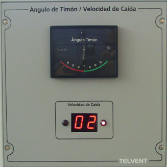
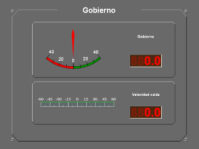

Timón y Velocidad de Caída
El módulo de Timón y Velocidad de Caída muestra continuamente los valores de timón y velocidad de caída.
Este módulo puede ser real (hardware) o simulado (software).
Versión Hardware:

La versión hardware contiene los siguientes elementos:
- Indicador de Ángulo de Timón: indicador analógico de escala -40º a +40º.
- Indicador de Velocidad de Caída: indicador digital de dos cifras en el que se muestra el valor de velocidad de caída de la unidad controla en grados por minuto.
- Indicadores de Dirección de Caída: se trata de dos LED rojos situados a derecha e izquierda del indicador de velocidad de caída, que se iluminan cuando la caída de la unidad es a estribor o babor respectivamente.
Versión Software:

La versión software contiene los siguientes elementos:
- Indicador de Ángulo de Timón: indicador analógico de escala -40º a +40º en el que se indica el ángulo de timón.
- Indicador digital de Ángulo de Timón: indicador digital en el que se muestra el valor del ángulo de timón.
- Indicador de Velocidad de Caída: indicador analógico de escala -60 a +60 que indica la velocidad y dirección de caída. Los valores negativos indican caída a babor y los positivos caída a estribor.
- Indicador digital de Velocidad de Caída: indicador digital en el que se muestra el valor de velocidad de caída en grados por minuto.